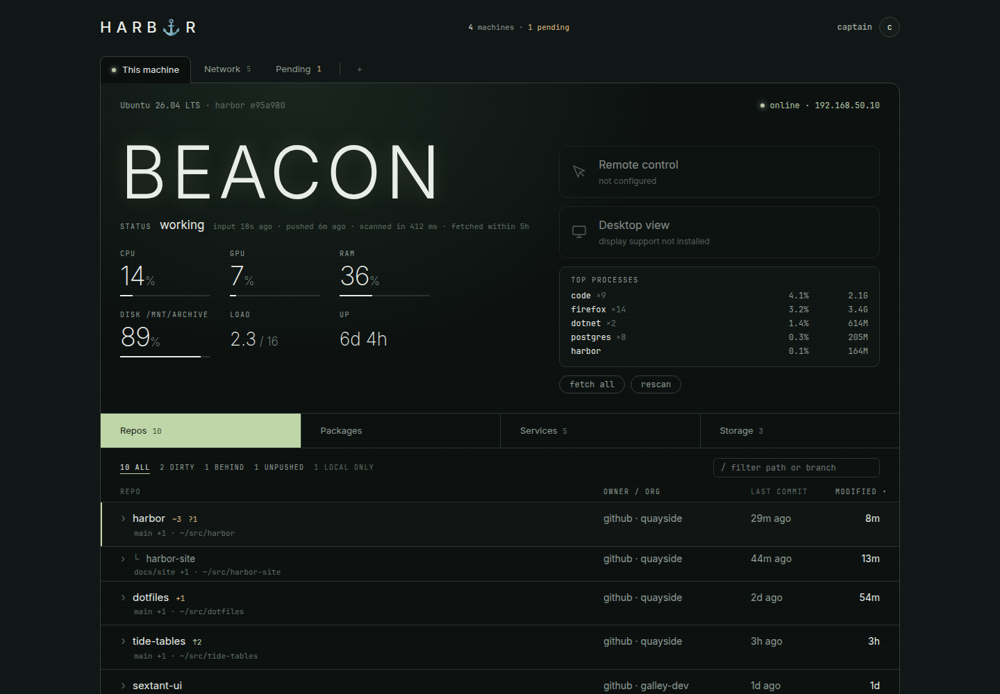
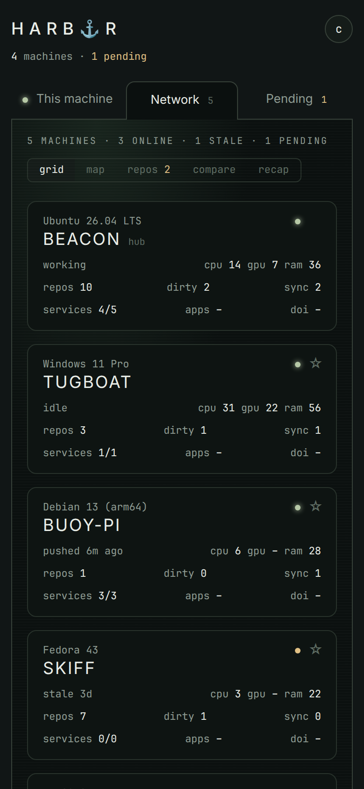
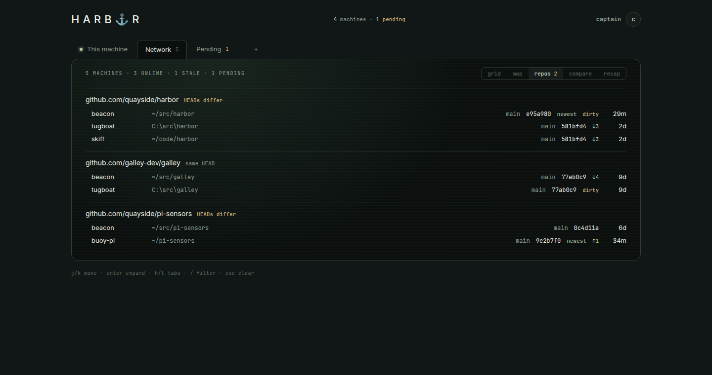
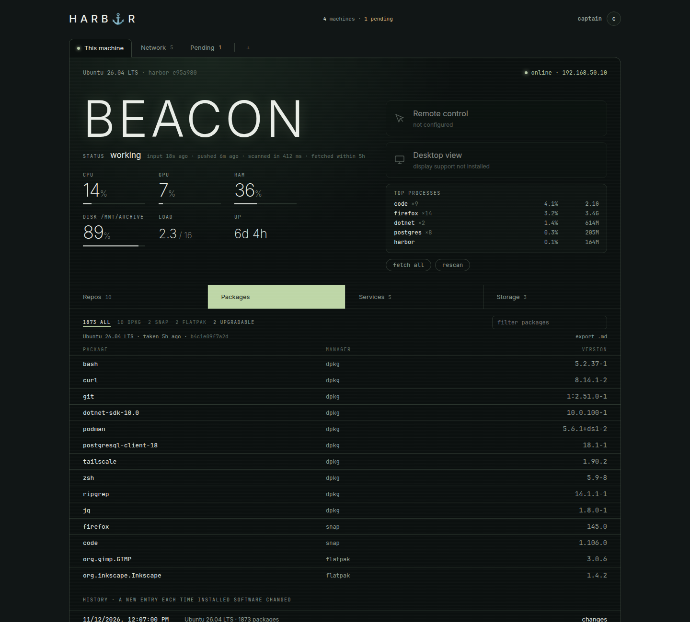
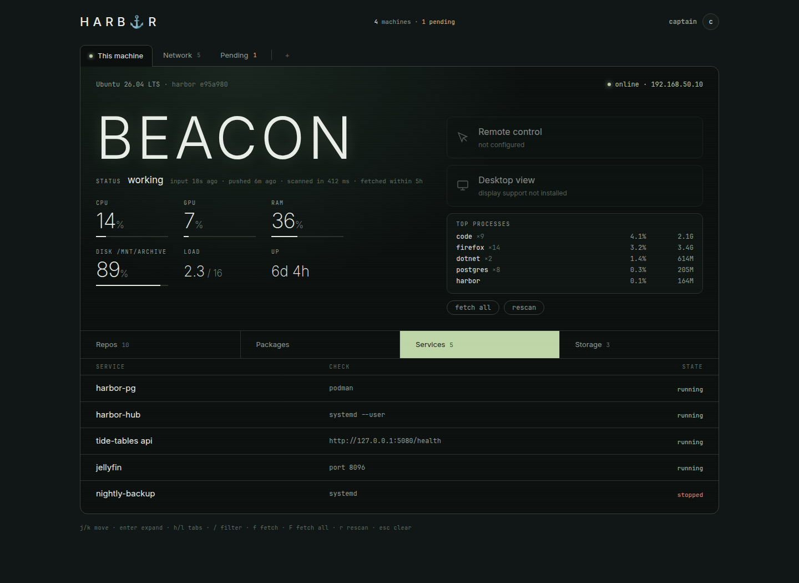
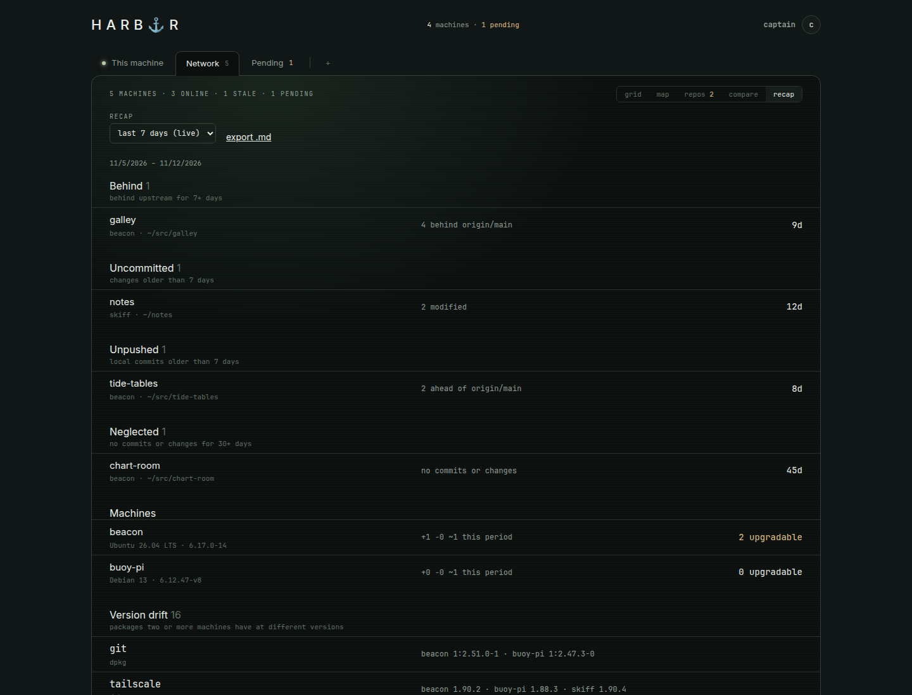
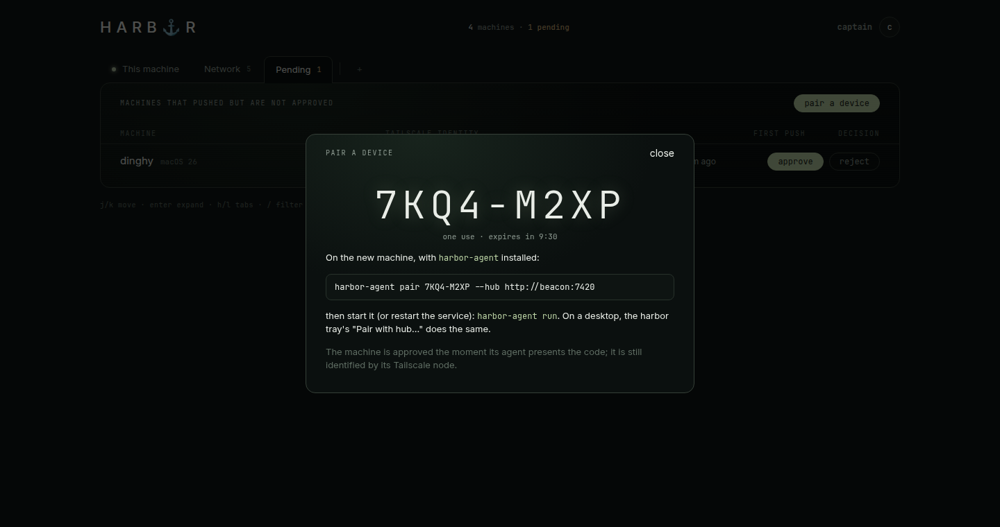
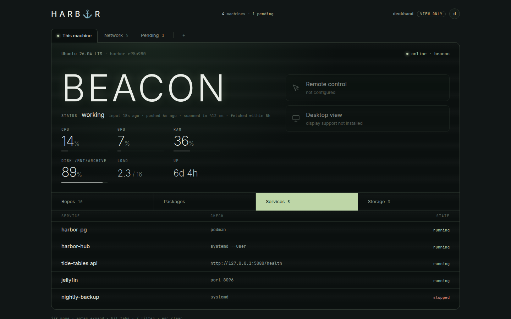

harbor tracks what exists where across your machines: which clones are dirty or unpushed, which services are up, what's installed, how full the disks are, and what changed this week. A small agent on each box reports to a hub you run. Everything stays on your tailnet.


Real UI, demo fleet. Machine names and data are made up.
A desktop, a laptop, a Windows box for games, a Pi in a cupboard, a couple of servers. Clones of the same project on three of them, one with a week of unpushed work. harbor is the ledger for that.
See dirty, unpushed and behind clones on every machine before you switch desks, not after.
Services, disks and packages across the fleet, with a weekly recap of what drifted.
A plain JSON API of deterministic facts that scripts and other tools can rely on instead of re-deriving them.
Agents walk your source roots and read git directly: branch, ahead/behind and since when, staged / modified / untracked counts, worktrees, local branches, last fetch.

Each agent builds a manifest: OS and kernel, packages per manager (dpkg with known upgrades, snap, flatpak) and where every repo lives. It's hashed and stored only when it changes, so the history is a changelog.

Declare the checks you care about per machine: systemd units (system or user), processes, TCP ports, HTTP endpoints, podman containers. Disks show the fullest mount up front.

Every week the hub writes down what needs a look: repos behind upstream, uncommitted or unpushed work older than a threshold, neglected projects, package changes, pending upgrades, and version drift between machines.
behindDays, dirtyDays, neglectedDays).
New machines show up as pending until an admin approves them. Or skip the wait:
create a one-time code (ten minutes, one use) and run harbor-agent pair on the new box.
The approval is audited against whoever made the code.

harbor-tray sits in the desktop's top bar and tells you, at a glance, whether this machine is
tethered to the hub. Its menu opens harbor, pairs devices, shows the agent log, toggles start at login and
offers Update harbor… when the hub knows newer commits. Headless machines use harbor-agent status (exit 0 / 1 / 2).
mockup drawn for this page; the real tray is an Avalonia app.
Every request is identified by Tailscale. Admins (loopback, or listed logins) see everything and can approve, fetch, hide and rescan. Viewers get a read-only UI with process lists, MAC and LAN addresses, git identities, changed file names, service details, job output and package contents removed. Anyone else gets a 403.
fetch). No shell.
harbor is not a metrics database or a telemetry pipeline. It keeps the current state, the transitions that matter, and an audit of what you asked it to do. Measured on x86-64:
self-contained, trimmed; needs only git
private, plus the mapped program; 12 threads
between rescans
fetch and manifest daily; refresh when you open a machine
only changed repo and service rows are written
events and manifests; audit kept; 52 recaps
One hub, one agent per machine. No cloud service, no account, no required companion app.
Every fact is collected and every recap decided by plain code you can read and test. No AI in the loop, so other tools (AI agents included) can trust it as a source.
Agents listen on nothing reachable, need no certificate and no inbound port. They connect out to the hub.
One F# codebase on .NET 10. The hub stores, diffs and serves; agents scan and push; the tray reads the agent's status. Tailscale provides transport and identity, so harbor has no home-made PKI.
agent (each machine) └─ push every 5 min ─▶ hub └─ websocket (wake) ─▶ hub hub ─▶ PostgreSQL 18 hub ─▶ browser (HTTPS via Tailscale Serve) tray ─▶ agent status + hub loopback API
| piece | what it is | runs on |
|---|---|---|
| harbor-agent | Scans repos, services, resources, manifests; pushes to the hub; no web server or database code | every machine · linux-x64, linux-arm64, win-x64 |
| harbor (hub) | Stores pushes, decides events and recaps, serves API and UI; modes hub, both, agent, migrate | one stronger machine |
| harbor-tray | Avalonia tray: tether light, pairing, updates; runs the agent on Windows | desktops |
| PostgreSQL 18 | Current projection, append-only events, manifests by content hash | next to the hub (podman quadlet) |
| Tailscale | Transport, machine identity (WhoIs StableID), user identity, HTTPS certificate | everywhere |
Direction, not promises. Each item keeps harbor standalone and light, and each is a good place to get involved.
Two hubs, say a Linux box and a Windows PC, each with its own agent, exchanging live state with each other over the LAN or tailnet. Live data stays in memory; only occasional snapshots are persisted. No single machine has to be "the" hub.
Pick up where you left off on another machine: which repos and branches you were in, and what's unpushed, handed over deliberately rather than discovered later.
A compact description of what a machine is for and what it should have: its role, expected services and toolchains. Drift is measured against it.
A read cache of issues and PRs from GitHub or Gitea, with harbor's own notes keyed by forge references. The forge stays the source of truth.
Optional desktop viewing through DisplayOverInternet's reusable runtime packages. harbor works fully without it; the tile stays off until it's ready.
winget, Homebrew, npm -g, pipx and dotnet tools. A versioned JSON protocol so other agents can be written against it, possibly a tiny Rust reporter for Pi-class devices.
You need .NET 10, bun, podman and Tailscale on the hub; just the agent binary and git on everything else.
# on the hub deploy/install-pg.sh deploy/install-hub.sh # on another machine, with a code from the hub's Pending tab harbor-agent pair 7KQ4-M2XP --hub http://<hub>:7420